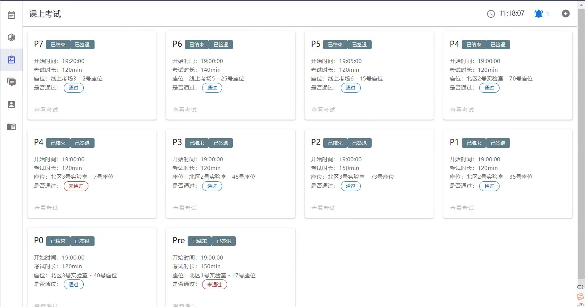
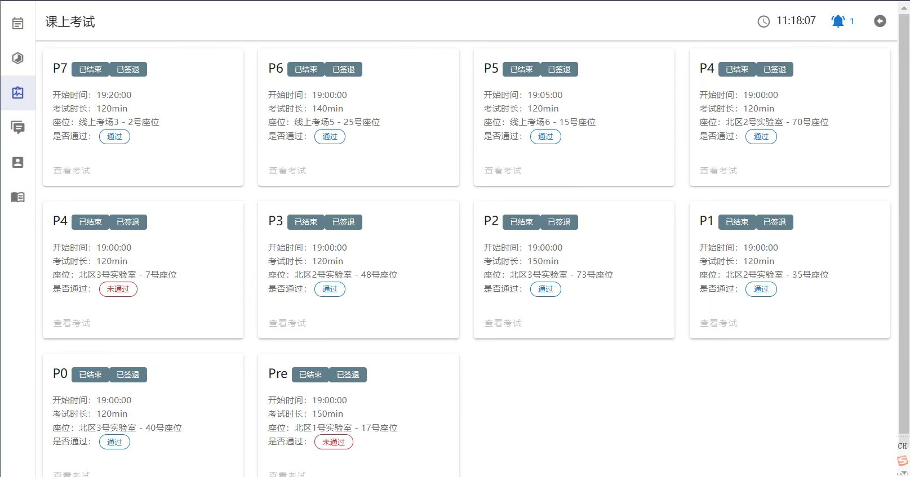

P7 设计文档
5 级流水线 CPU 设计文档 + 中断支持
支持指令
R, add, sub, And, Or, Xor, slt, sltu
addi, andi, xori, ori, lui
lb, lh, lw, sb, sh, sw, lbu, lhu
mult, multu, div, divu, mfhi, mflo, mthi, mtlo
beq, bne, j, jal, jr, bltzal
nop, eret, mtc0, mfc0, syscall
流程模块设计

CP0
- 处理来自 CPU 的内部异常以及来自中断发生器与 timer 的外部中断，产生异常控制信号给 CPU
- 放置在 M 级，接收 CPU 在 M 级的 mtc0,mfc0,eret 指令
- 其中包含三个寄存器 SR、Cause、EPC，SR 为中断异常使能控制，Cause 为异常中断情况，EPC 为异常处理结束后需要返回的 PC
- 具体 SR、Cause 的特定位如下宏定义所示，后续控制逻辑由其产生
1 | `define IM SR[15:10] //Interrupt Mask 由 mtc0 修改，屏蔽中断 |
-
通过 EXL 和 ExcCodeIn 判断有无异常产生，通过 EXL 和 IE，以及每一位有没有既有中断使能，又有中断信号判断有无中断产生。
-
注意产生异常或中断时指令在延迟槽，返回 PC 应为到上一条跳转指令的 PC，需要从 D 级一直流水 BDIn 信号，tmp_EPC = Req?(BDIn?VPC-4:VPC):EPC
-
其中 VPC 为 M 级 PC，即在外界观察到的宏观 PC
-
写寄存器只可写 SR 以及 EPC，判断写入地址是否是 12 或 14 并且有写使能
-
读寄存器可以直接读，根据地址 12 13 14 读三个寄存器
-
端口
| Port name | Direction | Type | Description |
|---|---|---|---|
| clk | input | ||
| reset | input | ||
| en | input | 写使能信号 (mtc0) | |
| CP0Add | input | [4:0] | 读写寄存器的编号 |
| CP0In | input | [31:0] | CP0 写入数据 |
| CP0Out | output | [31:0] | CP0 读出数据 |
| VPC | input | [31:0] | 受害 PC |
| BDIn | input | 是否是延迟槽指令 | |
| EPCOUt | output | [31:0] | EPC 的值 |
| EXLClr | input | 用来复位 EXL（M 级指令是 eret，即退出异常） | |
| ExcCodeIn | input | [4:0] | 记录异常类型 |
| HWInt | input | [5:0] | 输入 6 个设备中断信号 |
| Req | output | 进入处理程序请求（有异常或中断） |
系统桥
- 对 CPU 向外设写入的数据进行分流，对外设向 CPU 写入的数据进行选择。

- CPU 从外设读：根据地址用 MUX 筛选；CPU 向外设写：写地址、数据直接全部发送，写使能用 byteen 以及写地址决定决定
- 修改层级结构，在最高层通过系统桥将 CPU 与外置 DM,TC0,TC1, 以及中断生成器相连
- 注意传给 DM 的按位读写使能要再读写其他外设时置为 0
- 端口：
| Port name | Direction | Type | Description |
|---|---|---|---|
| CPUAddr | input | [31:0] | CPU 读写地址 |
| CPUWD | input | [31:0] | CPU 往外设写数据 |
| CPUbyteen | input | [3:0] | 按位读写使能 |
| TC0Write | output | 写 TC0 | |
| TC1Write | output | 写 TC1 | |
| DEV_Addr | output | [31:0] | 往外设写入的地址 |
| DEV_WD | output | [31:0] | 往外设写入的数据 |
| temp_m_data_byteen | output | [3:0] | 传给 DM 的按位读写使能 |
| DMRD | input | [31:0] | 三个外设写入 CPU 的数据 |
| TC0RD | input | [31:0] | |
| TC1RD | input | [31:0] | |
| CPURD | output | [31:0] | 最后决定写入 CPU 的数据 |
TC
-
包含三个 32 位寄存器，ctrl, preset, count
-
ctrl[3]表示中断屏蔽（1 允许中断），[2:1]为模式选择，[0]为计数器使能
-
四个状态的状态机，在 INT 状态下，如果中断没有屏蔽，则向外发送中断信号
- idle 状态下，如果计数器使能为 1 则转至 load 状态
- load 状态下，加载初始值之后转至 cnt 状态
- cnt 状态下，如计数器使能为 1 则开始倒计数，cnt==0 之后产生一周期终端信号，状态变为 interrupt；如果计数器使能为 0，则回到 idle
- interrupt 状态下，如果在模式 0，计数到 0 时计数器使能变 0；如果在模式 1，计数为 0 时中断变 0。之后回到 idle，等待计数器使能变 1 往复
-
端口
| Port name | Direction | Type | Description |
|---|---|---|---|
| clk | input | ||
| reset | input | ||
| Addr | input | [31:2] | |
| WE | input | ||
| Din | input | [31:0] | |
| Dout | output | [31:0] | |
| IRQ | output |
内部异常设计
-
所有异常级别低于中断级别，并均低于 Reset
-
每一级的异常流水需要遵循距离 M 级远的优先级更高，即在上一级有异常时，按上一级往后传；没有异常时，再判断当前阶段有无异常。
-
F 级有 F_Exc_AdEL，取指令异常，即取地址低位没有对齐或者超出地址存储区域。注意在有 eret 信号时，直接跳转到中断处理程序，不产生异常。
-
D 级 D_Exc_RI，即未知指令与 D_Exc_syscall，即 syscall 指令，从 CU 增加两个控制信号即可。
-
E 级有 E_Exc_AriOv，即计算指令溢出。同时还可产生 E_Exc_DMOv，即地址指令溢出，但需要注意该异常需要在 M 级才真正出现，E 级只是提前计算，访存指令还未执行，需要跳过 E 级异常流水，直接传给 M 级再加入异常流水判断。
-
M 级有 M_Exc_AdES 与 M_Exc_AdEL，即写入地址错误与读出地址错误。注意除了地址不对齐、超出范围之外，还有 M 级的地址运算溢出，以及不可用 lb,lh 读写 timer 中三个寄存器和不可写 timer 中 count 寄存器的要求。
-
最后传至 CP0 的即 M 级的 ExcCode
CU 模块设计
- 相较 P4，省去 RegWrite 信号，直接译出当前指令需要写入的地址，如不需写入，默认写至 0，在写入 GRF 时直接略去
- 直接译出当前指令 rs, rt, rd, shamt, imm16, imm26 以及所有控制信号供每个阶段选取使用，还需译出 Tuse_rs/rt 以及 E_Tnew 与 M_Tnew，各级输出对应信号至 Conflict 模块
- 将指令分类，分为：cal_r,cal_i,md,mt,mf,load,save,branch,branch_ucl,branch_cl,shift,jreg,jadd,jlink（ori 被归为 cal_i）
- 增加四个指令，增加 GRF 写入数据来源、写入地址的选择
- 增加 ALUDM、ALUAri 输出端口，表示当前使用 ALU 计算的指令是地址访存指令还是计算指令
1 | assign cal_r=(add||sub||And||Or||Xor||slt||sltu); |
- 控制信号新增：MDU, MDUStart, MDUSelect, MFSelect, ByteSelect, DESelect
- 控制信号调整：GRF_WA, GRF_WDSrc, ALUSelect, EXTSelect（cal_i 各个指令行为不同，注意对照指令集）,BranchSelect
| Port name | Direction | Type | Description |
|---|---|---|---|
| Ins | input | [31:0] | 当级指令 |
| branchTrue | input | 分支控制信号 | |
| 控制信号 | |||
| GRF_WA | output | [4:0] | 写入的地址 |
| GRF_WDSrc | output | [2:0] | 写入数据选择 |
| EXTSelect | output | EXT 位拓展类型选择 | |
| ALUSrc | output | ALU_B 的数据源选择 | |
| ALUSelect | output | [3:0] | ALU 运算类型选择 |
| MDU | output | 乘除运算 + 读写 HI LO 信号（需要阻塞） | |
| MDUStart | output | 乘除运算开始信号 | |
| MDUSelect | output | [2:0] | 乘除运算 + 写 HI LO 功能选择 |
| MFSelect | output | [1:0] | 读 HI LO 功能选择 |
| MemWrite | output | 内存写入控制 | |
| BranchSelect | output | [3:0] | branch 判断类型选择 |
| NPCSelect | output | [2:0] | NPC 类型选择 |
| ByteSelect | output | [1:0] | 访存数据类型选择 |
| DESelect | output | [2:0] | 读取内存后结果拓展类型 |
| 指令译码 | |||
| opcode | output | [5:0] | |
| funct | output | [5:0] | |
| rs | output | [4:0] | |
| rt | output | [4:0] | |
| rd | output | [4:0] | |
| shamt | output | [4:0] | |
| imm16 | output | [15:0] | |
| imm26 | output | [25:0] | |
| T 计算 | |||
| Tuse_rs | output | [1:0] | |
| Tuse_rt | output | [1:0] | |
| E_Tnew | output | [1:0] | |
| M_Tnew | output | [1:0] |
T 计算表格
- 注意新增的乘除指令的 AT
| Ins | Tuse_rs | Tuse_rt | E_Tnew | M_Tnew |
|---|---|---|---|---|
| cal_r | 1 | 1 | 1 | |
| cal_i | 1 | 1 | ||
| md | 1 | 1 | ||
| mt | 1 | |||
| mf | 1 | |||
| load | 2 | 2 | 1 | |
| save | 1 | 2 | ||
| branch | 0 | 0 | ||
| jreg | 0 |
Conflit 模块设计：AT 控制阻塞，直接转发
阻塞
- D 级判断将要使用的寄存器数据是否能得到转发更新，即后续写入相同寄存器的 Tnew 是否有大于 Tuse 的，如果有则需要阻塞，以在后续能得到转发更新。特判 0 号寄存器不需要阻塞，能够直接获得数据 0
- 需要得到 D 级指令 rs, rt 的 Tuse，以及后续 E, M 级指令的 Tnew，在各级 CU 中计算，发送至冲突单元（W 级 Tnew 全是 0 不需要考虑，都可以内部转发解决）
- 阻塞时需要暂停更新 PC 以及 F 级读出的指令，并且清空 D 级当前指令的译码输出，以替换为 nop 空泡
- P6 新增乘除 Stall，在乘除运算即将开始或正在进行时如遇到乘除指令需要 Stall
- P7 新增 eret 的 Stall，eret 与 mtc0 的写后读冲突，需要单独判断阻塞，判断方法为当 D 级为 eret 即将读 CP0 的 EPC 时，EM 级如果有 mtc0 即将写入 CP0 的 EPC，即 rd 为 14 时，阻塞。
转发
-
阻塞后，所有指令在需要读寄存器数据的时候都能够获得后续计算完毕的数据，每级转发出已算出的数据，发送给之前各级即可。
-
需要读寄存器：D 级 GRF，Branch 计算需要 rs, rt 数据；E 级 ALU 需要 rs,rt 数据；M 级 DM 写入数据口需要 rt 数据
-
需要写寄存器：E 级可转发出 D 级算的 PC+8；M 级可转发出 D 级算的 PC+8 和 E 级算的的 ALU_Y；W 级可转发出 D 级算的 PC+8，E 级算的的 ALU_Y 和 M 级读出的 DM 数据。根据当前指令 CU 译码得到的 GRF_WDSrc 进行选择。此外还有 W 级寄存器写入，可直接内部转发至 D 级读出


- 在主模块中，获取各级需要读的寄存器编号（D_rs,D_rt,E_rs,E_rt,M_rt），寄存器原读数（D_rs_data,D_rt_data,E_rs_data,E_rt_data,M_rt_data），写入的寄存器编号（E_GRF_WA,M_GRF_WA,W_GRF_WA）和数据（E_GRF_WD,M_GRF_WD,W_GRF_WD）
- 比较读的编号和写的编号是否有相等的，如有相等的则代表有数据已经更新需要转发，转发优先级为更新次序，最后一次更新优先转发，即优先转发距离需要数据的阶段近的数据，特判如果需要读 0 号寄存器的数据，直接转发 0
- 转发的数据（D_rs_fw,D_rt_fw,E_rs_fw,E_rt_fw,M_rt_fw）发送至各级需要的部分运算，并传递给下一级

五级模块设计
-
每个阶段之间以寄存器隔开，寄存器设计在每个模块输出处，使用 reg 类型
-
每个阶段之间需要流水传递 Ins，PC，传给各级 CU 以译码出当前阶段的 rs，rt 以及需要写入的地址和写入数据的选择
-
部分阶段前后间需要传递需要使用的 NPC, EXTout, ALU_Y, DM_RD
-
P7 新增：各级传出 ExcCode 并流水传递以及 DS（指令是否在延迟槽中）；CU 需在 D 和 M 级多译出 rd，为对 CP0 的读写提供阻塞条件与地址
P6 更新乘除槽与储存器外置以及按字节访存
- 删去 F_IFU 与 M_DM，添加 M_DE 与 E_MDU
- 乘除槽有两个寄存器，其中数据需要在 EMW 级流水，以便进行转发，并且需要添加转发信号控制
- 外置储存器需要修改数据通路，前寄存器发送写入数据，后寄存器接收读出数据
P7 宏观 PC
-
在外界的视角，仅需知道当前周期的情况，外界通过给出中断与 CPU 沟通，中断处理器位于 M 级，所以 M 级表现在外，宏观 PC 为 M 级 PC
-
为了保证做出单周期的表现，需要在出现异常中断时，所有流水寄存器统一做出跳转到 4180 中断处理程序的形态，并停止流水线中所有正在执行的指令的行为
1. Fetch
- 包含 FDReg
- Fetch
| Port name | Direction | Type | Description |
|---|---|---|---|
| clk | input | ||
| reset | input | ||
| F_Flush | input | 清空延迟槽信号 | |
| F_Stall | input | 阻塞更新 PC | |
| NPC | input | [31:0] | D 级 NPC 计算出的 NPC 传入 |
| F_PC | output | reg [31:0] | <=NPC，传出至外部指令储存器 |
| F_Ins | input | [31:0] | 需要从外部指令储存器读入 Ins |
| FD 寄存器 | |||
| D_Stall | input | 阻塞更新 FD 间寄存器 | |
| D_Flush | input | 清除延迟槽信号 | |
| D_PC | output | reg [31:0] | <=F_PC |
| D_Ins | output | reg [31:0] | <=F_Ins |
- F 级与指令储存的数据交换

2. Decode
- 包括 D_CU, EXT, NPC (Branch), DEReg
| Port name | Direction | Type | Description |
|---|---|---|---|
| clk | input | ||
| reset | input | ||
| D_PC | input | [31:0] | PC 流水 |
| D_Ins | input | [31:0] | 指令流水 |
| Conflict/Forward | |||
| Tuse_rs | output | [1:0] | AT 算阻塞 |
| Tuse_rt | output | [1:0] | |
| D_rs | output | [4:0] | D 级指令读寄存器的编号 |
| D_rt | output | [4:0] | |
| D_rs_data | output | [31:0] | D 级指令读寄存器原数据 |
| D_rt_data | output | [31:0] | |
| D_rs_fw | input | [31:0] | D 级转发后寄存器数据 |
| D_rt_fw | input | [31:0] | |
| EXT | |||
| imm16 | [15:0] | EXT 输入 | |
| EXTSelect | EXT 功能选择 | ||
| D_EXT_out | [31:0] | EXT 输出 | |
| NPC | |||
| NPCSelect | [2:0] | 下一指令地址选择 | |
| D_branchTrue | 是否分支信号，进入流水 | ||
| F_PC | input | [31:0] | 算 NPC 用 |
| NPC | output | [31:0] | 传给 F 级 IFU |
| DEReg | |||
| E_Flush | input | 阻塞清空 DE 寄存器 | |
| E_PC | output | reg [31:0] | <=D_PC |
| E_Ins | output | reg [31:0] | <=D_Ins |
| E_rs_data | output | reg [31:0] | <=D_rs_fw |
| E_rt_data | output | reg [31:0] | <=D_rt_fw |
| E_EXT_out | output | reg [31:0] | <=D_EXT_out |
| E_branchTrue | output | reg [31:0] | <=D_branchTrue |
3. Execute
- 包括 E_CU, E_ALU, E_MDU, EMReg
- 需在此处多向 Conflict 传递 MDU 指令以及乘除运行信息，并向流水中传递 HI, LO 以便 mf 指令 W 级读取
| Port name | Direction | Type | Description |
|---|---|---|---|
| clk | input | ||
| reset | input | ||
| E_PC | input | [31:0] | PC 流水 |
| E_Ins | input | [31:0] | 指令流水 |
| Conflict/Forward | |||
| E_branchTrue | input | 是否分支信号 | |
| E_Tnew | output | [1:0] | AT 算阻塞 |
| E_rs | output | [4:0] | E 级指令读寄存器的编号 |
| E_rt | output | [4:0] | |
| E_rs_data | output | [31:0] | E 级指令读寄存器原数据 |
| E_rt_data | output | [31:0] | |
| E_GRF_WA | output | [4:0] | E 级指令写寄存器的编号 |
| E_rs_fw | input | [31:0] | E 级接收转发后寄存器数据 |
| E_rt_fw | input | [31:0] | |
| GRF_WDSrc | [2:0] | E 级指令写寄存器的数据选择 | |
| E_GRF_WD | output | [31:0] | E 级指令写寄存器的数据 |
| ALU | |||
| E_EXT_out | input | [31:0] | |
| ALUSrc | ALU_B 数据源选择 | ||
| ALUSelect | [3:0] | ALU 功能选择 | |
| E_ALU_A | [31:0] | =E_rs_fw：ALU_A 口数据 | |
| E_ALU_B | [31:0] | =E_rt_fw/E_EXT_out：ALU_B 口数据 | |
| MDU | |||
| MDU | output | MDU 指令 | |
| MDUSelect | [2:0] | CU 给 MDU 的功能选择 | |
| MDUStart | output | MDU 运算开始 | |
| MDUBusy | output | MDU 运算进行（发给 Conflict 判断阻塞) | |
| E_HI | [31:0] | 待转发的 E 级 MDU 的 HI 结果 | |
| E_LO | [31:0] | 待转发的 E 级 MDU 的 LO 结果 | |
| EMReg | |||
| M_PC | output | reg [31:0] | <=E_PC |
| M_Ins | output | reg [31:0] | <=E_Ins |
| M_ALU_Y | output | reg [31:0] | <=E_ALU_Y |
| M_rt_data | output | reg [31:0] | <=E_rt_fw |
| M_branchTrue | output | reg | <=E_branchTrue |
| M_HI | output | reg [31:0] | <=E_HI |
| M_LO | output | reg [31:0] | <=E_LO |
- #####E_ALU
| Port name | Direction | Type | Description |
|---|---|---|---|
| op | input | [3:0] | |
| A | input | [31:0] | |
| B | input | [31:0] | |
| Y | output | [31:0] |
-
#####E_MDU
- 当指令为 mthi, mtlo，将寄存器数据写入 HI, LO 时，始终上升沿直接给 HI, LO 赋为 A
- 当为其余四条运算指令时，设置临时计数变量 cnt，初始为 0，接受到 Start 信号时，开始设置 Busy 为 1；根据 MDU 功能选择编码，分别直接计算出 HI, LO 对应结果赋值，因为其他乘除操作已被阻塞，不会提前读取或写入；设置 cnt 为 5 或 10，每周期 -1，cnt==1 代表运算结束，持续保持 Busy 为 5/10 周期后将 cnt, Busy 归零。
| Port name | Direction | Type | Description |
|---|---|---|---|
| clk | input | ||
| reset | input | ||
| Start | input | CU 传入开始乘除运算信号 | |
| MDUSelect | input | [2:0] | CU 传入乘除功能选择 |
| A | input | [31:0] | |
| B | input | [31:0] | |
| Busy | output | reg | 正在运算信号 |
| HI | output | reg [31:0] | |
| LO | output | reg [31:0] |
4. Memory
- 包括 M_CU, M_DE
- 因储存器外置，删除 DM，加入对字节存取数据的操作，包括通过控制四位 ByteEn 各位
| Port name | Direction | Type | Description |
|---|---|---|---|
| clk | input | ||
| reset | input | ||
| M_PC | input | [31:0] | |
| M_Ins | input | [31:0] | |
| Conflict/Forward | |||
| M_branchTrue | input | ||
| M_Tnew | output | [1:0] | AT 算阻塞 |
| M_GRF_WA | output | [4:0] | M 级指令写寄存器编号 |
| M_GRF_WD | output | [31:0] | M 级指令写寄存器数据 |
| M_rt | output | [4:0] | M 级指令读寄存器编号 |
| GRF_WDSrc | [2:0] | M 级指令写寄存器数据选择 | |
| MFSelect | [1:0] | 读 HI LO 功能选择 | |
| M_HI | input | [31:0] | 待转发的 E 级 MDU 的 HI 结果 |
| M_LO | input | [31:0] | 待转发的 E 级 MDU 的 LO 结果 |
| M_ALU_Y | input | [31:0] | 待转发的 E 级 ALU 计算结果 |
| M_BE（ByteEnable） | |||
| lowAddr | [1:0] | =M_ALU_Y[1:0]，DM 写入地址地两位 | |
| M_rt_fw | input | [31:0] | M 级接收转发后将写入 DM 的数据 |
| ByteSelect | [1:0] | CU 访存数据类型选择 | |
| MemWrite | DM 写使能 | ||
| ByteEn | output | reg [3:0] | 控制每一位是否读写的信号输出 |
| M_DM_WD | output | reg [31:0] | |
| M_DE（DataExtend） | |||
| DESelect | [2:0] | 字节数据拓展类型 | |
| M_DM_RDin | input | [31:0] | |
| M_DM_RDout | [31:0] | ||
| MWReg | |||
| W_PC | output | reg [31:0] | <=M_PC |
| W_Ins | output | reg [31:0] | <=M_Ins |
| W_ALU_Y | output | reg [31:0] | <=M_ALU_Y |
| W_DM_RD | output | reg [31:0] | <=M_DM_RDout |
| W_branchTrue | output | reg | <=M_branchTrue |
| W_HI | output | reg [31:0] | <=M_HI |
| W_LO | output | reg [31:0] | <=M_LO |
-
M_BE（计算字节访存使能，调整四字节写入数据）
-
合并在 Memory 中，在写入的条件下，根据写入数据类型和写入地址低两位产生四个字节的每一位控制信号，即四位 ByteEn
-
后续再根据 ByteEn 调整将写入内存的数据，需将待写入的字节移动到对应为 En1 的位置
-
-
M_DE（调整内存读出数据，截取需要的字节后拓展）
-
注意 DESelect 种类编码，注意需要将读出字节移动至低位，高位进行拓展补齐
Port name Direction Type Description lowAddr input [1:0] DESelect input [2:0] in input [31:0] out output [31:0]
-
-
M 级与内存数据交换
-

5. Writeback
- 包括 W_CU
| Port name | Direction | Type | Description |
|---|---|---|---|
| clk | input | ||
| reset | input | ||
| W_Ins | input | [31:0] | |
| W_PC | input | [31:0] | |
| Conflict/Forward | |||
| W_branchTrue | input | ||
| W_GRF_WA | output | [4:0] | W 级指令写寄存器编号 |
| GRF_WDSrc | [2:0] | W 级指令写寄存器数据选择 | |
| MFSelect | [1:0] | 读 HI LO 功能选择 | |
| W_ALU_Y | input | [31:0] | 待转发的 E 级 ALU 计算结果 |
| W_DM_RD | input | [31:0] | 待转发的 M 级 DM 读出数据 |
| W_HI | input | [31:0] | 待转发的 E 级 MDU 的 HI 结果 |
| W_LO | input | [31:0] | 待转发的 E 级 MDU 的 LO 结果 |
| W_GRF_WD | output | [31:0] | W 级指令写寄存器数据 |
测试
- 非中断异常测试同 P6
- 中断测试
1 | .text |
- 异常测试：
1 | .text |
掉的坑
- 逻辑判断式中信号不可有高阻态否则出 x，删除赋值逻辑时需给 0，否则删除所有位置的这个信号
- 地址异常中，合法地址包括 DM，TC0，TC1 以及 中断发生器 响应地址

- 注意出现异常或中断时，除了需要将所有级寄存器修改至即将跳转至 handler 的样貌之外，还需要将 M 级读写字节使能设为 0000，防止后续指令的继续进行以及 当前指令在 M 级对内存的写入
- 注意 eret 与 mtc0 的写后读冲突，需要单独判断阻塞，判断方法为当 D 级为 eret 即将读 CP0 的 EPC 时，EM 级如果有 mtc0 即将写入 CP0 的 EPC，即 rd 为 14 时，阻塞。
- 宏观 PC，与提供给 CP0 的 VPC 均为 M 级 PC
- timer 中不可写 count 寄存器，并且只能用 lw，sw 进行读写
思考题
-
当键盘鼠标按键时，会发出一个中断信号，经过中断控制器处理传到 CPU，然后 CPU 根据不同的中断号执行不同的中断响应程序，然后进行相应的 IO 操作，如把按下的按键编码读到寄存器，执行相应功能。
-
为了不与正常的指令范围冲突，需要在特定地址提前放置中断处理程序并且其他指令与数据不能包含这段地址范围。用户不可自定义入口地址，因为自定义的地址上的中断处理程序可能会被其他数据覆盖。并且如果由用户提供中断异常处理程序的话，跳转的地址也是计算出来的，但是如果在计算跳转地址的时候出现了错误，异常处理就无法正常进行。
-
CPU 外设数量可能会更多，并且是变化的，不可硬性直接相连。需要添加桥，根据读写地址或者根据外设特定信号，动态选择读写外设。
-
idle，load，cnt 状态行为相同，只有 interrupt 状态控制功能不同
-
idle 状态下，如果计数器使能为 1 则转至 load 状态
-
load 状态下，加载初始值之后转至 cnt 状态
-
cnt 状态下，如计数器使能为 1 则开始倒计数，cnt==0 之后产生一周期终端信号，状态变为 interrupt；如果计数器使能为 0，则回到 idle
-
interrupt 状态下
- 如果在模式 0，计数到 0 时计数器使能变 0，持续产生中断，变为 idle 状态，直到 en 为 1，中断才清零，重新倒计时
- 如果在模式 1，计数为 0 时中断直接变 0，仅持续一个周期，但 en 仍为 1，变为 idle 状态后可以自动循环继续倒计时，产生周期中断脉冲
-
-
倘若中断信号流入的时候，在检测宏观 PC 的一级 CPU 该级所有信息均为空，则无法获得当前的 PC 以及当前指令是否在延迟槽中，无法获得执行完中断程序后的正确返回地址。所以清空流水线时需要保留原指令的地址以及是否处于延迟槽的信号。
-
Register specifiers rs and rd must not be equal, because such an instruction does not have the same effect when reexecuted. The result of executing such an instruction is UNPREDICTABLE. This restriction permits an exception handler to resume execution by re-executing the branch when an exception occurs in the branch delay slot.
-
指令集要求。寄存器说明符 rs 和 rd 不得相等，因为此类指令在重新执行时不具有相同的效果。执行此类指令的结果是不可预测的。此限制允许异常处理程序在分支延迟槽中发生异常时通过重新执行分支来恢复执行。
结算页面
计组实验结束了，当你经历过面向对，象、操作系统、编译技术等课程的洗礼，或许你又会觉得，当年的计组是那么和蔼可亲。但请相信，没有北航人跨不过的坎”我们总要背起行囊，扬起风帆，向尽头之海进发，一往无前。
感谢你一路以来的不离不弃，坚守相伴，这一切的洗礼才刚刚开始，长路漫漫祝你前程似锦。
计组课程团队
@新北 5 号
2022.12.21

 
